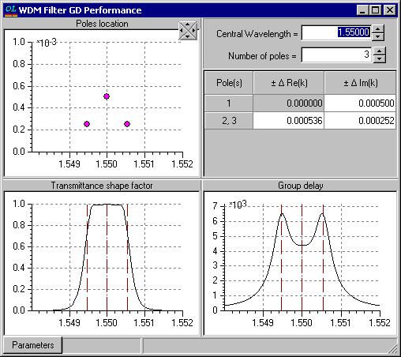

WDM Filter GD Performance
WDM Filter GD Performance
Navigation: OptiLayer Menu Commands > Analysis Menu >
WDM Filter GD Performance
` <zeroes_and_poles_setup.html>`__ ` <idh_menu_analysis.html>`__ ` <export_target_setup.html>`__

The WDM Filter GD Performance window allows estimating the implicit relation between the transmittance steepness of a WDM filter and the amplitude of ripples in the GD spectral dependence. This relation is a consequence of the causality principle and follows from the fundamental properties of amplitude transmittance and reflectance. In particular, this relation can be characterized by the positions of the poles of amplitude reflectance in the complex plane of wavenumbers (wavelengths). Only poles in the vicinity of the high transmission zone contribute significantly to the characteristics mentioned above. It is possible to experiment with the positions of poles using the mouse (simply drag any of the poles in the upper left window). The number of poles and their positions in digital form can be controlled in the upper right window. The scaling of the plots can be adjusted with the help of a four-way spinner control in the middle of the upper part of the window. The lower left part of the window displays the resulting transmittance shape factor, which is a product of so-called elementary terms. The lower right part displays the GD spectral dependence, which is a sum of elementary functions with weights equal to the inverse distance of the corresponding pole from the real axis. Use the right-click menu or the Parameters button for additional options. For example, it is possible to display elementary terms together with resulting characteristics, and to control the steps of spinners for digital input. With the help of the right-click menu, the resulting transmittance can be exported as a target transmittance to OptiLayer and used in the WDM Filter Synthesis option. This allows the user to design a WDM filter with the required transmittance and GD characteristics. Use the WDM Filter… command with an active External target for this purpose. Additional useful information on possible applications of this option can be found in the paper: